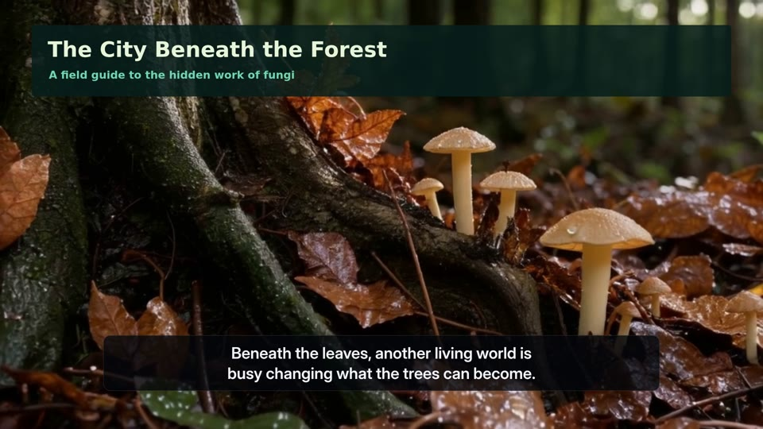
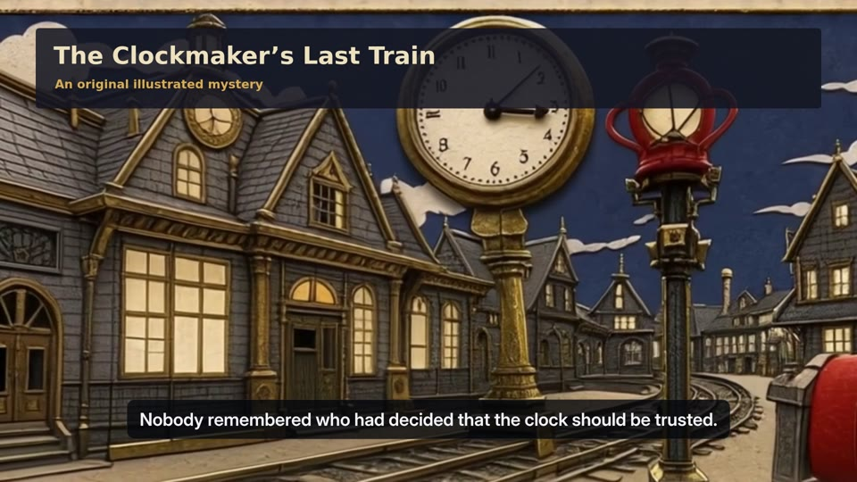
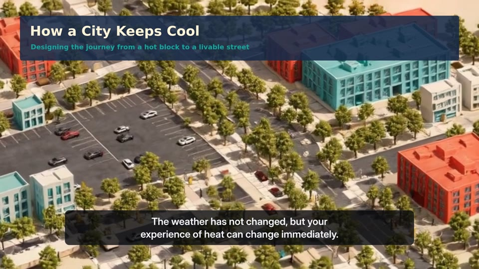
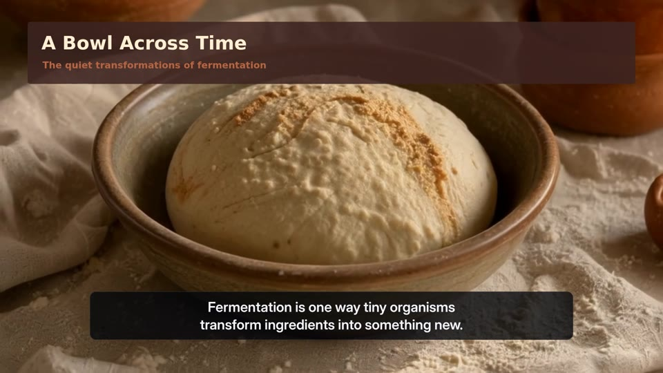
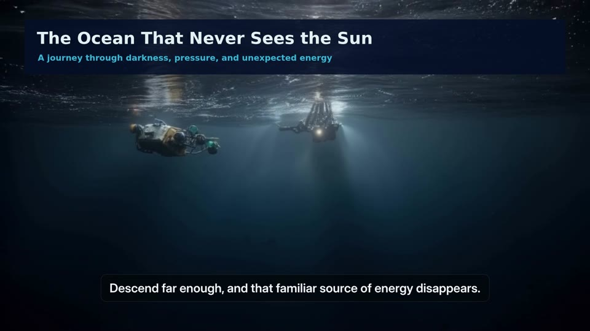

4:10COMFYRIZZ / ORIGINAL LONG-FORM COLLECTION
Five worlds.
Five ways to see.
From the forest floor to the deep ocean: five narrated films with fresh generated motion, original animated diagrams, distinct scores, and editable project downloads.

4:00
4:18coolcity / 28 chapters
How a City Keeps Cool
Designing the journey from a hot block to a livable street

3:56
4:16abyss / 28 chapters
The Ocean That Never Sees the Sun
A journey through darkness, pressure, and unexpected energy